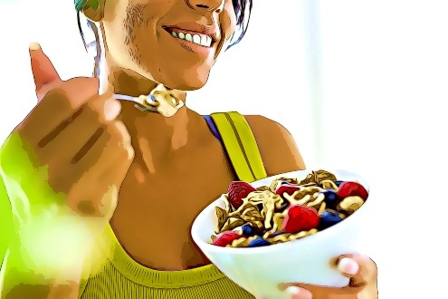

Nerve pain occurs when a disease or injury causes misfired “pain signals” to be sent to the brain.
There are many possible causes of nerve pain including cancer, diabetic nerve pain, multiple sclerosis, sciatic nerve pain, celiac disease, HIV, toxins, decaying teeth, autoimmune conditions and certain medications.
The problem with painkillers and topical creams is they merely mask the pain, but they don’t treat the root cause. So very quickly as the body builds up a tolerance to these, you end up finding that they stop working altogether.

Arthritis Test: Can You Do This Simple Spine Rotation Movement?



3 Incredible Foods That Fight Nerve Pain
Nerve pain occurs when a disease or injury causes misfired “pain signals” to be sent to the brain.
There are many possible causes of nerve pain including cancer, diabetic nerve pain, multiple sclerosis, sciatic nerve pain, celiac disease, HIV, toxins, decaying teeth, autoimmune conditions and certain medications.
The problem with painkillers and topical creams is they merely mask the pain, but they don’t treat the root cause. So very quickly as the body builds up a tolerance to these, you end up finding that they stop working altogether.
…The great news is that there are all-natural foods that can provide ongoing relief from your nerve pain— whether it is shooting pain, pinpricks, tingling, or stabbing pain.
NOTE: Like any sort of ongoing pain, you should always consult your Doctor for the most customized solution to the specific problem you are experiencing.
So let’s count down towards our number 1 most incredible food that fights nerve pain, starting with…
#3 Berries
Sometimes, inflammation makes your pain worse, so munching on berries can help. Berries have polyphenols, which are natural anti-inflammatories, which are great in preventing pain flare-ups.
In fact, the berries’ anti-inflammatory element is powerful, because it contains a compound called resveratrol. These brightly colored fruits are packed with antioxidants and nutrients.
There are different types of berries that you can choose from, so pick your favorite. Blueberries, raspberries, grapes, acai berries, and bilberries.
#2 Sardines
Another powerful weapon against nerve pain are omega-3 fatty acids. One of the foods that contain the highest levels of omega-3 are sardines.
Omega-3 acids provide therapeutic effects, and work great for the nervous system. Sardines are not only delicious, but they are also packed with incredible vitamins and nutrients.
This oily, silver-scaled fish in a can not only helps ease stabbing, shooting pain in your nerves, but it also provides generous amounts of calcium and protein. Sardines can also do wonders for your overall health, as it increases the production of red blood cells.
This delicious fish can lower your bad cholesterol and blood pressure as well. It is also important to note that sardines have one of the lowest levels of mercury, so you don’t have to worry about enjoying this food too much.
Sardines play a vital role in your overall health, and including this in your regular diet can play a major role in diminishing your pains.
#1 Pumpkin Seeds
When it comes to a nerve crisis, pumpkin seeds can save the day.
Why? Pumpkin seeds are dense with potassium and magnesium, which balance nerve conduction and tame those excited nerves.
Pumpkin seeds are natural “fixers” when it comes to the function of your nervous system.
Magnesium, for one, even calms down the over-stimulated nervous system and promotes a sharp memory.
These magical seeds also include zinc, copper, and iron.
All the more reason to indulge in this food.
1. https://www.hindawi.com/journals/mi/2015/643763/
2. https://www.mdpi.com/2076-3921/9/1/61/pdf
3. https://www.thankyourbody.com/foods-for-nerve-damage/
4. https://www.ncbi.nlm.nih.gov/pmc/articles/PMC6024559/
5. https://www.practicalpainmanagement.com/treatments/nutraceutical/omega-3-fatty-acids-neuropathic-pain
6. https://www.sciencedirect.com/science/article/pii/S0005273617301566
7. https://www.medicalnewstoday.com/articles/are-sardines-good-for-you
8. https://www.cnbc.com/2016/10/11/why-this-millionaire-investor-eats-five-cans-of-sardines-every-day.html
9. https://lluh.org/services/neuropathic-therapy-center/blog/6-food-dos-donts-minimize-nerve-pain